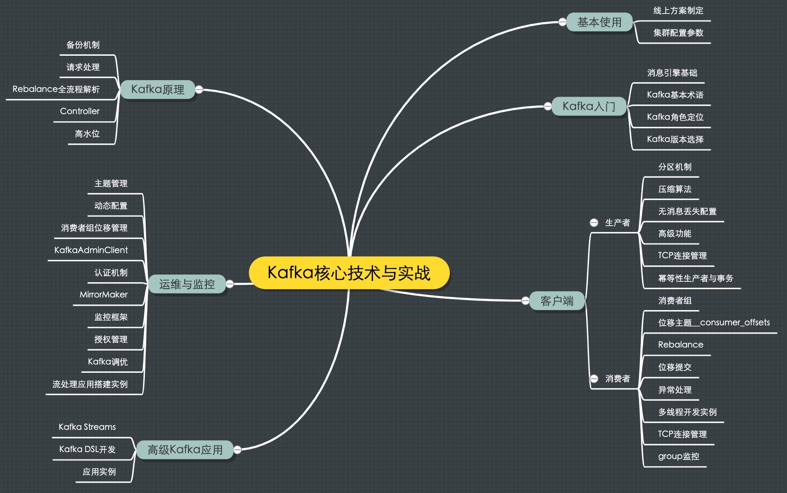

- 00 开篇词 为什么要学习Kafka？.md.html
- 01 消息引擎系统ABC.md.html
- 02 一篇文章带你快速搞定Kafka术语.md.html
- 03 Kafka只是消息引擎系统吗？.md.html
- 04 我应该选择哪种Kafka？.md.html
- 05 聊聊Kafka的版本号.md.html
- 06 Kafka线上集群部署方案怎么做？.md.html
- 07 最最最重要的集群参数配置（上）.md.html
- 08 最最最重要的集群参数配置（下）.md.html
- 09 生产者消息分区机制原理剖析.md.html
- 10 生产者压缩算法面面观.md.html
- 11 无消息丢失配置怎么实现？.md.html
- 12 客户端都有哪些不常见但是很高级的功能？.md.html
- 13 Java生产者是如何管理TCP连接的？.md.html
- 14 幂等生产者和事务生产者是一回事吗？.md.html
- 15 消费者组到底是什么？.md.html
- 16 揭开神秘的“位移主题”面纱.md.html
- 17 消费者组重平衡能避免吗？.md.html
- 18 Kafka中位移提交那些事儿.md.html
- 19 CommitFailedException异常怎么处理？.md.html
- 20 多线程开发消费者实例.md.html
- 21 Java 消费者是如何管理TCP连接的_.md.html
- 22 消费者组消费进度监控都怎么实现？.md.html
- 23 Kafka副本机制详解.md.html
- 24 请求是怎么被处理的？.md.html
- 25 消费者组重平衡全流程解析.md.html
- 26 你一定不能错过的Kafka控制器.md.html
- 27 关于高水位和Leader Epoch的讨论.md.html
- 28 主题管理知多少_.md.html
- 29 Kafka动态配置了解下？.md.html
- 30 怎么重设消费者组位移？.md.html
- 31 常见工具脚本大汇总.md.html
- 32 KafkaAdminClient：Kafka的运维利器.md.html
- 33 Kafka认证机制用哪家？.md.html
- 34 云环境下的授权该怎么做？.md.html
- 35 跨集群备份解决方案MirrorMaker.md.html
- 36 你应该怎么监控Kafka？.md.html
- 37 主流的Kafka监控框架.md.html
- 38 调优Kafka，你做到了吗？.md.html
- 39 从0搭建基于Kafka的企业级实时日志流处理平台.md.html
- 40 Kafka Streams与其他流处理平台的差异在哪里？.md.html
- 41 Kafka Streams DSL开发实例.md.html
- 42 Kafka Streams在金融领域的应用.md.html
- 加餐 搭建开发环境、阅读源码方法、经典学习资料大揭秘.md.html
- 用户故事 黄云：行百里者半九十.md.html
- 结束语 以梦为马，莫负韶华！.md.html
- 捐赠
00 开篇词 为什么要学习Kafka？
你好，我是胡夕，Apache Kafka Committer，老虎证券用户增长团队负责人，也是《Apache Kafka实战》这本书的作者。
在过去5年中，我经历了Kafka从最初的0.8版本逐步演进到现在的2.3版本的完整过程，踩了很多坑也交了很多学费，慢慢地我梳理出了一个相对系统、完整的Kafka应用实战指南，最终以“Kafka核心技术与实战”专栏的形式呈现给你，希望分享我对Apache Kafka的理解和实战方面的经验，帮你透彻理解Kafka、更好地应用Kafka。
你可能会有这样的疑问，我为什么要学习Kafka呢？要回答这个问题，我们不妨从更大的视角来审视它，先聊聊我对这几年互联网技术发展的理解吧。
互联网蓬勃发展的这些年涌现出了很多令人眼花缭乱的新技术。以我个人的浅见，截止到2019年，当下互联网行业最火的技术当属ABC了，即所谓的AI人工智能、BigData大数据和Cloud云计算云平台。我个人对区块链技术发展前景存疑，毕竟目前没有看到特别好的落地应用场景，也许在未来几年它会更令人刮目相看吧。
在这ABC当中，坦率说A和C是有点曲高和寡的，不是所有玩家都能入场。反观B要显得平民得多，几乎所有公司都能参与进来。我曾经到过一个理发厅，那里的人都宣称他们采用了大数据系统帮助客户设计造型，足见BigData是很“下里巴人”的。
作为工程师或架构师，你在实际工作过程中一定参与到了很多大数据业务系统的构建。由于这些系统都是为公司业务服务的，所以通常来说它们仅仅是执行一些常规的业务逻辑，因此它们不能算是计算密集型应用，相反更应该是数据密集型的。
对于数据密集型应用来说，如何应对数据量激增、数据复杂度增加以及数据变化速率变快，是彰显大数据工程师、架构师功力的最有效表征。我们欣喜地发现Kafka在帮助你应对这些问题方面能起到非常好的效果。就拿数据量激增来说，Kafka能够有效隔离上下游业务，将上游突增的流量缓存起来，以平滑的方式传导到下游子系统中，避免了流量的不规则冲击。由此可见，如果你是一名大数据从业人员，熟练掌握Kafka是非常必要的一项技能。
刚刚所举的例子仅仅是Kafka助力业务的一个场景罢了。事实上，Kafka有着非常广阔的应用场景。不谦虚地说，目前Apache Kafka被认为是整个消息引擎领域的执牛耳者，仅凭这一点就值得我们好好学习一下它。另外，从学习技术的角度而言，Kafka也是很有亮点的。我们仅需要学习一套框架就能在实际业务系统中实现消息引擎应用、应用程序集成、分布式存储构建，甚至是流处理应用的开发与部署，听起来还是很超值的吧。
不仅如此，再给你看一个数据。援引美国2019年Dice技术薪资报告中的数据，在10大薪资最高的技术技能中，掌握Kafka以平均每年12.8万美元排名第二！排名第一位的是13.2万美元/年的Go语言。好吧，希望你看到这个之后不会立即关闭我的专栏然后转头直奔隔壁的Go语言专栏。虽然这是美国人才市场的数据，但是我们有理由相信在国内Kafka的行情也是水涨船高。2019年两会上再一次提到了要深化大数据、人工智能等研发应用，而Kafka无论是作为消息引擎还是实时流处理平台，都能在大数据工程领域发挥重要的作用。
总之Kafka是个利器，值得一试！既然知道了为什么要学Kafka，那我们就要行动起来，把它学透，而学透Kafka有什么路径吗？
如果你是一名软件开发工程师的话，掌握Kafka的第一步就是要根据你掌握的编程语言去寻找对应的Kafka客户端。当前Kafka最重要的两大客户端是Java客户端和libkafka客户端，它们更新和维护的速度很快，非常适合你持续花时间投入。
一旦确定了要使用的客户端，马上去官网上学习一下代码示例，如果能够正确编译和运行这些样例，你就能轻松地驾驭客户端了。
下一步你可以尝试修改样例代码尝试去理解并使用其他的API，之后观测你修改的结果。如果这些都没有难倒你，你可以自己编写一个小型项目来验证下学习成果，然后就是改善和提升客户端的可靠性和性能了。到了这一步，你可以熟读一遍Kafka官网文档，确保你理解了那些可能影响可靠性和性能的参数。
最后是学习Kafka的高级功能，比如流处理应用开发。流处理API不仅能够生产和消费消息，还能执行高级的流式处理操作，比如时间窗口聚合、流处理连接等。
如果你是系统管理员或运维工程师，那么相应的学习目标应该是学习搭建及管理Kafka线上环境。如何根据实际业务需求评估、搭建生产线上环境将是你主要的学习目标。另外对生产环境的监控也是重中之重的工作，Kafka提供了超多的JMX监控指标，你可以选择任意你熟知的框架进行监控。有了监控数据，作为系统运维管理员的你，势必要观测真实业务负载下的Kafka集群表现。之后如何利用已有的监控指标来找出系统瓶颈，然后提升整个系统的吞吐量，这也是最能体现你工作价值的地方。
在明确了自己要学什么以及怎么学之后，你现在会不会有一种感慨：原来我要学习这么多东西呀！不用担心，刚刚我提到的所有内容都会在专栏中被覆盖到。
下面是我特意为专栏画的一张思维导图，可以帮你迅速了解这个专栏的知识结构体系是什么样的。专栏大致从六个方面展开，包括Kafka入门、Kafka的基本使用、客户端详解、Kafka原理介绍、Kafka运维与监控以及高级Kafka应用。

- 专栏的第一部分我会介绍消息引擎这类系统大致的原理和用途，以及作为优秀消息引擎代表的Kafka在这方面的表现。
- 第二部分则重点探讨Kafka如何用于生产环境，特别是线上环境方案的制定。
- 在第三部分中我会陪你一起学习Kafka客户端的方方面面，既有生产者的实操讲解也有消费者的原理剖析，你一定不要错过。
- 第四部分会着重介绍Kafka最核心的设计原理，包括Controller的设计机制、请求处理全流程解析等。
- 第五部分则涵盖Kafka运维与监控的内容，想获得高效运维Kafka集群以及有效监控Kafka的实战经验？我必当倾囊相助！
- 最后一个部分我会简单介绍一下Kafka流处理组件Kafka Streams的实战应用，希望能让你认识一个不太一样的Kafka。
这里不得不提的是，有熟悉我的读者可能知道我出版过的图书《Apache Kafka实战》。你可能有这样的疑问：既然有书了，那么这个专栏与书的区别又是什么呢？《Apache Kafka实战》这本书是基于Kafka 1.0版本撰写的，但目前Kafka已经演进到2.3版本了，我必须要承认书中的部分内容已经过时甚至是不准确了，而专栏的写作是基于Kafka的最新版。并且专栏作为一次全新的交付，我希望能用更轻松更容易理解的语言和形式，帮你获取到最新的Kafka实战经验。
我希望通过学习这个专栏，你不仅能够将Kafka熟练运用到实际工作当中去，而且还能培养出对于Kafka或是其他技术框架的浓厚学习兴趣。
最后我希望用一句话收尾与你共勉：Stay focused and work hard！
© 2019 - 2023 Liangliang Lee. Powered by gin and hexo-theme-book.